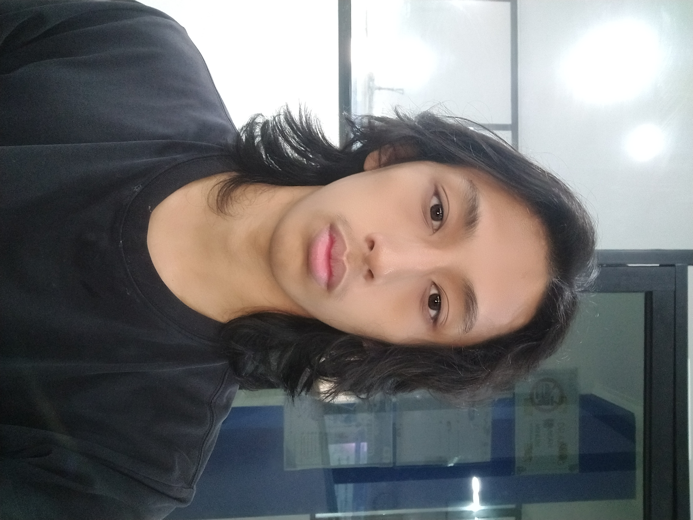

Email: ryantongko0505@example.com
Telepon: +62 811-1580-505
Mahasiswa Teknik Informatika yang antusias dengan pengembangan perangkat lunak dan teknologi terbaru. Bersemangat untuk belajar dan berkontribusi dalam proyek-proyek inovatif.
Pendidikan
| Tingkat | Nama Sekolah/Universitas | Tahun | Keterangan |
|---|---|---|---|
| Kuliah | Universitas Contoh — S1 Teknik Informatika | 2024–Sekarang | IPK saat ini: 3.94 |
| SMA | SMA Contoh — Program IPA | 2021–2024 | Lulus |
| SMP | SMP 177 Jakarta | 2018–2021 | Lulus |
| SD | SD Pembangunan Jaya | 2012–2018 | Lulus |
Pengalaman Organisasi
- Anggota UKM Bola Basket UBL (2024–Sekarang)
- OSIS SMA Kartika X-1 (2022)
- Seksi Olahraga
- OSIS SMP 177 Jakarta (2022)
- Bendahara
Keahlian
- Bahasa Pemrograman: Python, C, C++, HTML, Java
- Database: MySQL, SQLite
- Microsoft Office, Microsoft Excel
Kelebihan
- Adaptif dan cepat belajar hal baru
- Mampu bekerja sama dalam tim maupun individu
- Disiplin dan bertanggung jawab
- Kemampuan komunikasi yang baik
- Kreatif dan good problem solving skills
- Proficient dalam berbahasa Inggris